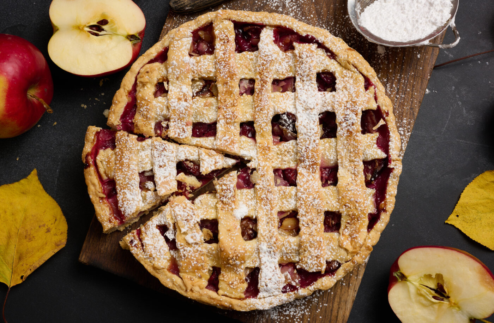

Ingredients
- Pie Dough: 230g All-purpose flour, 120g Cold butter, 50g Cold water, 2g Salt
- Apple Filling: 2-3 Apples, 70g Sugar, 1 tablespoon Lemon juice, 1 teaspoon Cinnamon powder
- Others: 1 Egg (for brushing)
Steps
- Prepare the pie dough: Mix flour and salt, then cut in cold butter until crumbly. Add cold water and knead into a dough. Wrap and chill for 30 minutes.
- Make the apple filling: Slice apples (0.5cm thick), cook with sugar and lemon juice over medium heat until caramelized. Add cinnamon powder and cool.
- Roll the chilled dough to 0.3cm thickness. Line a tart pan and prick the base with a fork.
- Fill the tart with the prepared apple filling.
- Use remaining dough to create lattice strips and place on top of the filling. Brush with beaten egg.
- Bake at 190°C for 30 minutes until golden brown. Let it cool and serve.